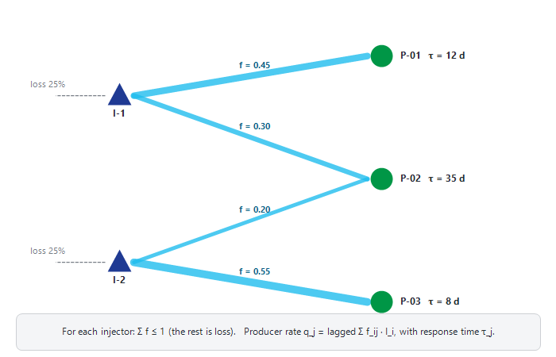
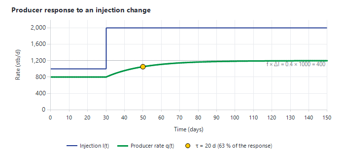

|
Injectors dashboard and interwell connectivity (CRM)
1. Opening the Injectors dashboard
Click "Injectors" in the "Monitoring" group of the main ribbon, in the "Monitoring" group of the Decline Curves window, or on the ribbon of the Asset dashboard. The window "Injection Monitoring <asset>" opens maximised.
2. Selecting a well
•Well type list (top left) — "Water Injector", "Gas Injector" or "WAG" (only the types present in the asset model). Changing it refills the lists and loads the first well.
•"Location" and "Reservoir" lists filter the well list. Click a well, or use the Up / Down arrow keys, to load it.
•Status list — "Available", "Broken Well" or "Abandoned"; a change is saved in the asset model immediately.
3. "Injection Parameters" box and status card
The box shows, in a "Current" column, the latest daily "Water Injection" (or "Gas Injection"), "THP", "BHP" and "Choke", and in a "Target" column the well's latest THP and injection targets. Rows that do not apply to the well type are hidden.
As on the Producers dashboard, a status card shows the open actions of the well (click the blue "Ongoing action" pill to open the Action Tracker) and its EBS events of the last 24 hours.
4. Main chart
The main chart shows the well's daily "THP", "BHP", "FP" and "Choke" on the left axis ("Pressure (<unit>) , Choke") and the injection rate on the right axis ("Water Injection rate" and / or "Gas Injection rate"). Rates are drawn as areas, or as columns for a WAG well with both water and gas.
Use "2 years" (default), "5 years" or "All time" to set the window. The chart ends on the asset's latest allocated injection date.
4.1 Settings panel
Click "Settings" to open the panel; move the mouse back onto the chart to close it.
•"WI Parameters" — "THP", "BHP", "Water Injection", "Gas Injection", "Choke", "FP", "Targets" (horizontal "THP target" and "Water Injection target" lines) and "Reservoir pressure" (points). Some ticks take effect when the next well is loaded.
•"Forecast" — choose a scenario (opens on the most recently modified one) and tick "Water Injection" and / or "Gas Injection" to overlay the well's forecast injection.
•"Highlight frac'" (ticked by default) — marks the days where the injection pattern suggests a fracture opening (section 4.2).
•"Zoom on" — "Primary Y axis" or "Secondary Y axis" chooses the axis a drag-zoom acts on.
•"Window" — "Daily", or "High Frequency" on real-time assets, with "Sampling" (default 05 min) and "Number days" (default 7). Requests of more than 200,000 points are refused.
4.2 Fracture highlighting
With "Highlight frac'" ticked, Precept marks with "Frac" points the days where, on two consecutive days, the THP fell while the injection rate rose by more than 100 (rate unit per day), and injection then continued for at least 5 days. A falling injection pressure with a rising rate is the classic signature of an injection-induced fracture opening. Treat the marks as prompts to look, not as a diagnosis.
4.3 Chart gestures
Drag to zoom; double-click, Esc or "⟲ Unzoom" to unzoom; right-click an axis or title for "Format chart", a series for "Series style"; double right-click to copy the chart. See Monitoring module, section 4.
5. Right-hand charts
•"Hall Plot" (chart "Simplified hall Plot") — cumulative THP ("Sum Pressure") against cumulative water injection ("Sum WI"), one point per injection day. A straight line means stable injectivity; a steepening slope suggests plugging or skin build-up, a flattening slope suggests fracturing or improved injectivity. It uses the wellhead pressure, without reservoir-pressure correction. For the full Hall plot use the "Hall Plot" ribbon button (section 6).
•"Friction model" — tubing friction against water injection rate ("Friction", "Friction to BHP", "Old Friction", "Actual Friction"). Shown when the asset uses Prosper well models.
•"System Calculation (last 1000 days)" — the injector's "VLP" and "IPR" with the "Last Operating point" and "Old Operating points". The solution-node list ("Tubing head" or "Reservoir") changes the pressure axis. Shown when the asset uses Prosper well models.
6. Ribbon buttons
•"Raw Data" group — "WI Daily Parameters", "GI Daily Parameters" (according to the well type), "Forecast", "All Comments", "High frequency Parameters" (in High Frequency mode), "Tags", "Actions" (comments / actions log of the well).
•"BHP from THP" (Prosper well models) — calculates the BHP from the measured THP and rate over the history and adds it to the chart as "BHP_Prosper" points, to compare with the gauge BHP.
•"Inflow Performance" (Prosper well models) and "Hall Plot" — open Monitoring Plots on the injectivity index or the Hall plot; see Reservoir management plots.
•"Update Prosper model" (Prosper well models) — opens a "Prosper Model" panel to recalibrate the injector: choose the VLP correlation, the "Hydro" and "Friction" multipliers, enter the injection pressure, reservoir pressure and injectivity index, click "Calculate System" to see the solution rate, and "Save Model" to save it. For well models in general, see Nodal analysis and well models.
•"Targets" group (appears once injector targets exist) — "Set Target" opens "Set Water Injector targets": enter the "THP :" and "Water Injection:" targets and a "Comment:", then "Submit". "WI Targets history" lists the previous targets. See also Producers dashboard, section 10.
•"Completion drawings" — opens the well's completion drawing (when a completion-drawings folder is configured).
Voidage replacement and pattern performance are analysed in "Pattern performance" (Producers dashboard); see Reservoir management plots and Patterns.
7. Interference CRM Analysis — which injector supports which producer
7.1 What it is
In a waterflood, you rarely know how much of each injector's water actually supports each producer. The capacitance-resistance model (CRM) estimates it from data you already have: the injection rates, the production rates and, if available, the producers' BHP. No geological model is needed. The idea is simple: when an injector's rate goes up or down, the producers it is connected to respond, a little later and smoothed out. CRM finds, for each injector-producer pair, the fraction of the injected water that reaches the producer.

Figure 1 — CRM concept: each injector's water is split between producers (connectivity f) and a loss; each producer responds to its supporting injection with a lag (time constant τ).
Precept uses the producer-based CRM (CRMP). For each producer j, at each time step:
q_j(t) = q_j(t−Δt) · e^(−Δt/τ_j) + (1 − e^(−Δt/τ_j)) · [ Σ_i f_ij · I_i(t) − J_j · τ_j · ΔPwf_j/Δt ]
•I_i — the injection rate of injector i; q_j — the production rate of producer j.
•f_ij — connectivity: the fraction of injector i's water that supports producer j (0 = none, 1 = all). For each injector, the fractions sent to all producers add up to at most 1; the rest ("loss") goes out of the selected producers (other wells, aquifer, out of zone).
•τ_j — response lag (days): how quickly producer j feels a change of injection. A small τ means a fast, direct connection; a large τ a slow, damped response.
•J_j — productivity index: the rate change caused by a change of the producer's own BHP (optional "BHP correction term"). It prevents a BHP change from being mistaken for an injection effect.
•Optional base support — a constant non-injection support per producer (aquifer, primary depletion).
The fit: for a given τ, the model is linear in f, J and the base support, which are found by non-negative least squares (no negative connectivity). τ is searched between 1 day and the length of the fit window. The objective is the sum of squared differences between the modelled and observed producer rates. Each period of continuous data starts from the observed rate. The fit is deterministic: the same data give the same result.

Figure 2 — Response of a producer to a step increase of injection: the extra rate reaches f × ΔI with a lag set by τ.
7.2 Opening it and loading the data
On the Asset dashboard, click "Interference CRM Analysis". The window "Interference CRM Analysis" opens and loads the data (progress window "Loading CRM data", with a Cancel button):
•producers (well type containing "Producer"): daily allocated liquid, oil and uptime, and daily BHP;
•water injectors: daily water injection. Gas injectors and WAG wells are not used.
CRM needs at least one producer and one water injector with data. Data are cleaned before the fit: rates are divided by the uptime (rate while producing); days with less than 25 % uptime, shut-in days and negative values are ignored; BHP readings below half the well's median BHP are treated as gauge dropouts. A producer needs at least 60 usable days to be fitted.
7.3 Running a fit
1.Optionally narrow the wells with the "Location" and "Reservoir" lists, then select wells in "Producers (multi-select)" and "Injectors (multi-select)". Nothing selected means all listed wells.
2.Check the "Fit window" dates. By default it is the period where all loaded wells have data.
3.Choose the "Producer response": "Total liquid (oil + water)" (default, recommended for voidage support) or "Oil only".
4.Choose the "Resolution": "Weekly averages (recommended)" or "Daily". Weekly averages smooth out daily noise.
5.Keep "Use BHP correction term" ticked when producer BHPs are available. Tick "Include base (non-injection) support" when an aquifer or primary depletion also supports the producers.
6.Click "Run fit". Nothing is fitted until you do.
Each tab is a pattern: a set of wells, a window, options and their result. "New pattern" creates a new tab ("Pattern N") and fits it; double-click a tab to rename it; close a tab with its close button. If you change a selection or an option after a fit, the tab name gets a " *" until you run the fit again. When a pattern uses only some of the wells, the support from the excluded wells shows up as loss.
7.4 Reading the results
•"Connectivity matrix f (fraction of injector's water reaching each producer)" — rows = injectors, columns = producers, colour from light (weak) to dark blue (strong). "–" means f is practically zero, "n/f" that the producer could not be fitted. Amber cells marked "!" are unstable: the connectivity changes by more than 0.15 between the first and the second half of the window. The "Σ f" and "loss" columns give, per injector, the total allocated and the remainder; a red ">1 !" flags an over-allocated injector. Click a cell to open that producer in the drill-in.
•"Connectivity map (plan view , arrow width = f)" — the wells at their X / Y coordinates from the asset model (injectors navy, producers green), with an arrow from each injector to each producer where f ≥ 0.03, its width proportional to f and labelled with f. A dashed "loss N%" stub shows each injector's loss. Click a well to isolate its links; mouse wheel to zoom, drag to pan, double-click to reset. Without X / Y in the asset model, the map stays empty.
•"Producer drill-in (observed vs modelled , and where its support comes from)" — choose a "Producer". Tiles show "τ response lag (d)", "J productivity index", "R² fit quality", "days fitted" (or weeks) and "typical error (of rate)". The first chart compares "Observed" and "Modelled (CRM)" rates; the second ("Injector support to <producer>") shows f per injector, for the full window and for each half.
The "Data readiness" box explains how far each result can be trusted: per injector, its average rate, how much it varies and its gaps (an injector with an almost flat rate is marked "<< FLAT": its connectivity cannot be identified); the similarity r between injectors (above 0.95 their combined support is known but not the split between them); per producer, R², error, τ and data gaps. Warnings also appear when τ reaches its search limit, when R² is negative (the model is worse than a flat average) or when BHP has many spikes.
7.5 Saving and exporting
CRM is read-only: nothing is saved in the Precept database. Type your notes in "Analysis comments" (per tab), then click "Export CSV" to save all fitted tabs in one file (default name CRM_<asset>_<date>.csv) with, per producer, τ, J, f per injector and the comments.
7.6 Good practice
•CRM needs injection rates that vary. Periods with step changes, shut-ins and restarts of injectors carry the information; a constant injection rate tells nothing.
•Fit one hydraulic unit at a time (filter by reservoir) and include all the injectors that can support the selected producers.
•Check stability: compare two windows (two tabs) and look for amber cells. Trust strong, stable connections more than weak ones.
•CRM results are observational estimates from historical data — use them to target tracer tests, pattern reviews or injection rebalancing, not as operating instructions.
|